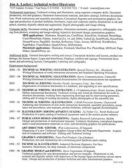
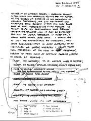

Here are to be found various writings by Jon, about Jon, and a bunch of stuff that doesn't really have any other place to be. Notice, that in Jon's planning documents, he has excessive detail, way too many line items, and too many objectives. He really believed the "Renaissance Man" image he projected.
Anyone who has more on Jon they'd like to contribute can
ontact Andrew Grygus
agryg@clovegarden.com or music@clovegarden.com.

